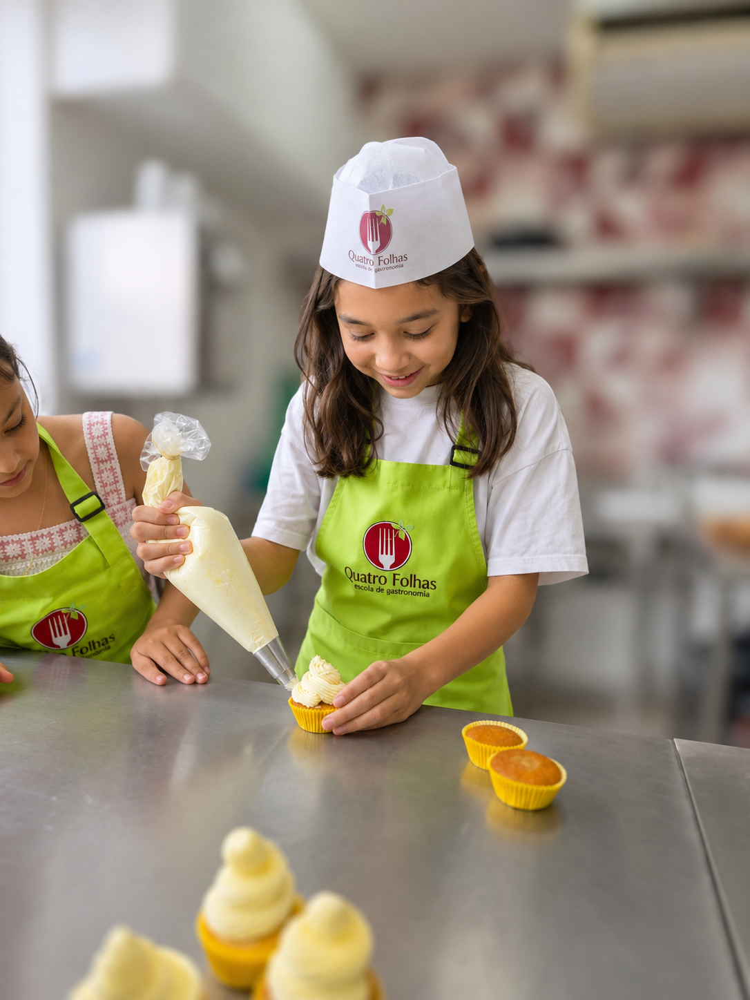
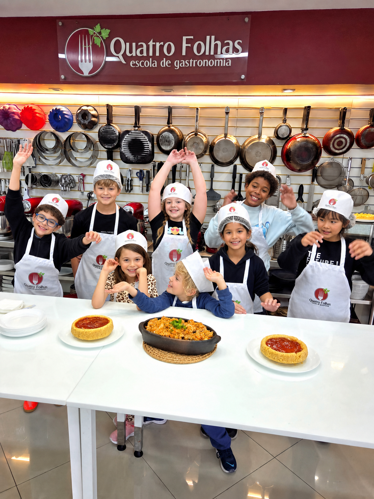

Curso infantil para aprender na prática, com turma, continuidade e acompanhamento.
Crianças e escolas
Gastronomia para crianças, famílias e escolas.
Escolha o melhor formato: Mini Chef para aprender com continuidade, festa infantil gastronômica para comemorar ou projeto sob medida para escolas.


três caminhos
Comemoração gastronômica em que as crianças cozinham, montam e celebram juntas.
Vivências para escolas particulares, na Quatro Folhas ou no espaço da instituição.
A equipe ajuda a direcionar o melhor formato para idade, objetivo e quantidade de crianças.
Aprendizado
Cozinhar aproxima a criança dos alimentos.
A experiência é prática, sensorial e organizada para que a criança participe de verdade: tocar, provar, preparar, dividir tarefas e se orgulhar do resultado.
Fazer com as próprias mãos
A criança entende etapas, usa utensílios adequados e ganha confiança na bancada.
Receitas com imaginação
Cores, texturas e apresentação transformam a aula em uma descoberta divertida.
Aprender em grupo
As atividades estimulam colaboração, escuta, organização e cuidado com o espaço.
Formato sob medida
A mesma linguagem prática pode virar curso, comemoração ou projeto educacional.
Para responsáveis e escolas
Visual leve, mas experiência com estrutura.
A proposta infantil mantém o encantamento da cozinha, mas com organização, cuidado, ambiente preparado e condução próxima da equipe.
Como funciona
Da ideia ao formato certo, sem complicar.
A página serve como porta de entrada para famílias e coordenações entenderem rapidamente qual experiência faz sentido.
Entender o objetivo
Curso, aniversário, ação escolar, férias ou vivência pontual.
Definir o público
Idade das crianças, quantidade, perfil do grupo e necessidade de acompanhamento.
Escolher o formato
Mini Chef, festa infantil gastronômica ou aulas para escolas particulares.
Receber orientação
A equipe retorna com datas, possibilidades e próximos passos.
Fotos e estrutura
Experiência infantil dentro de uma cozinha de verdade.
Imagens grandes, ambiente real e materiais visuais ajudam pais e escolas a entenderem a proposta sem uma página burocrática.


